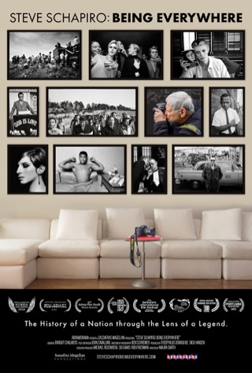

Steve Schapiro: Being Everywhere
From the festival
With extraordinary access to larger-than-life figures and a gimlet eye highly attuned to key moments, photographer Steven Schapiro did more than passively observe. He actively bore witness to history and kept alive ongoing human concerns through a cavalcade of breathtaking images. In this documentary portrait, many of Schapiro’s photos—in striking black and white and some in living color—are given space and time for contemplation, narrated by Schapiro’s wry, thoughtful insights. He spent sustained periods with celebrated cultural icons like Warhol, Streisand, Bowie, and Brando, as well as towering figures of the Civil Rights Movement, including James Baldwin, Muhammed Ali, John Lewis, and Dr. Martin Luther King Jr. Just as crucial as the many pivotal events he framed with his camera are the human experiences of his subjects revealed in this finely wrought account. —Brian Karl Screens with BIG ROCK BURNING (US 29min) This intimate documentary explores the resilient spirit of Malibu's Big Rock community as they rebuild after the devastating Palisades Fire.
- Directed by
- Maura Smith
- Country
- USA
- Year
- 2025
- Running time
- 71 minutes
- Guests
- Steve Schapiro BEING EVERYWHERE Maura Smith, Theophilus Donoghue, Big Rock Burning David Goldblum, Julie Benello, Included In This Program
Source: Festival website programme (MVFF48): Wayback Machine copy; Festival film page: Wayback Machine copy; Poster from Rotten Tomatoes